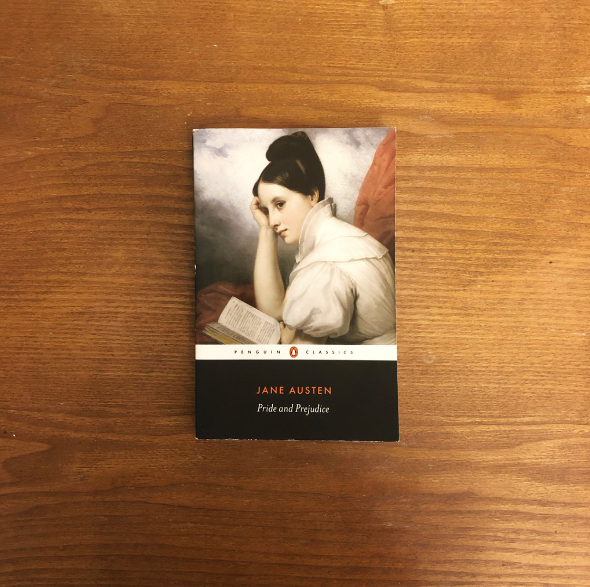
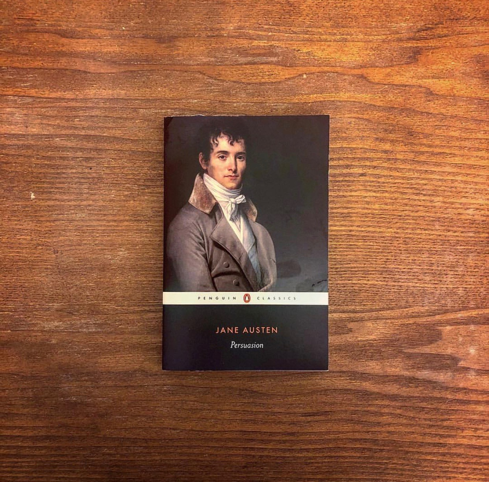
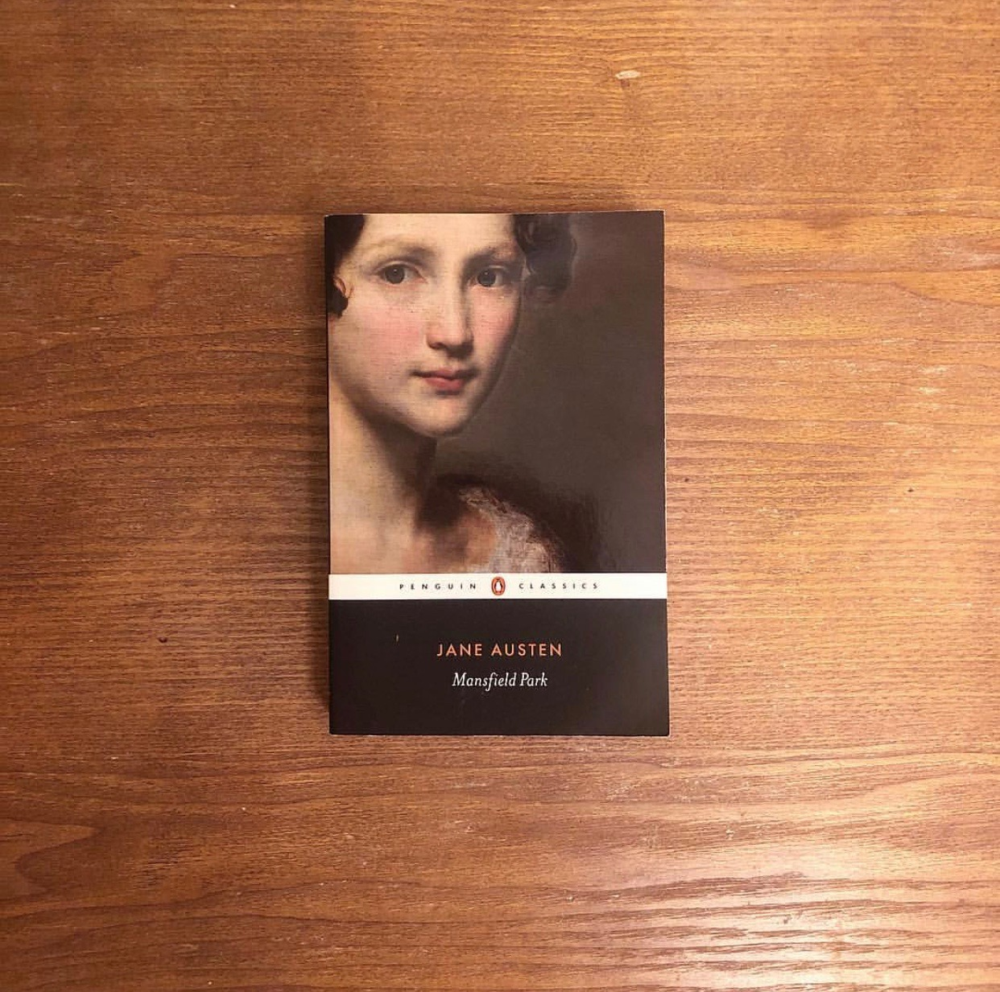
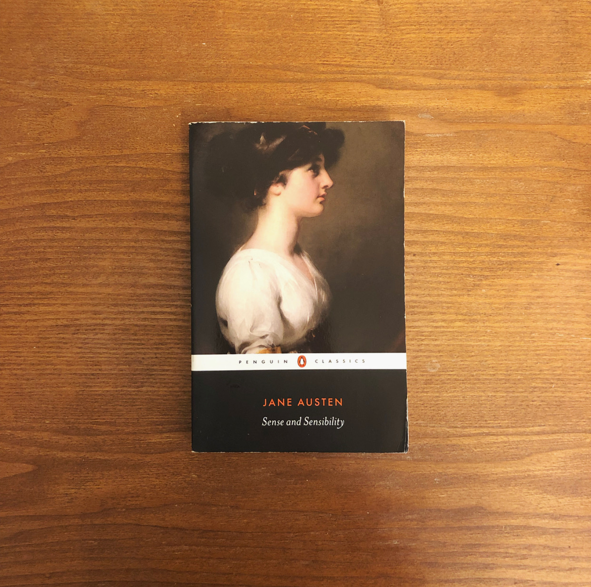
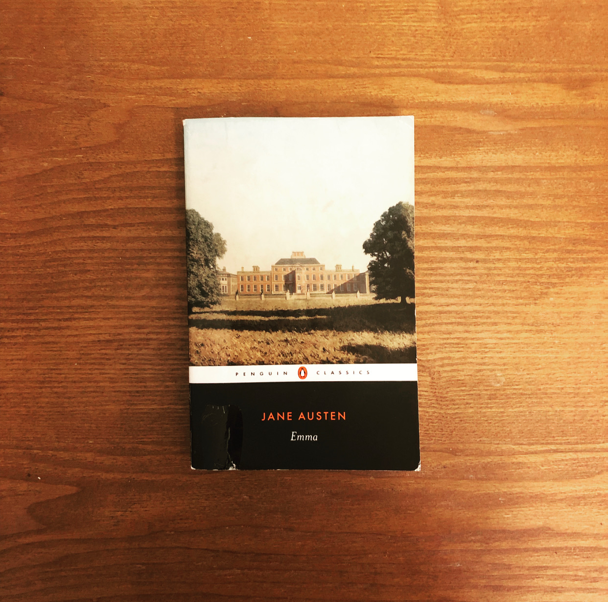
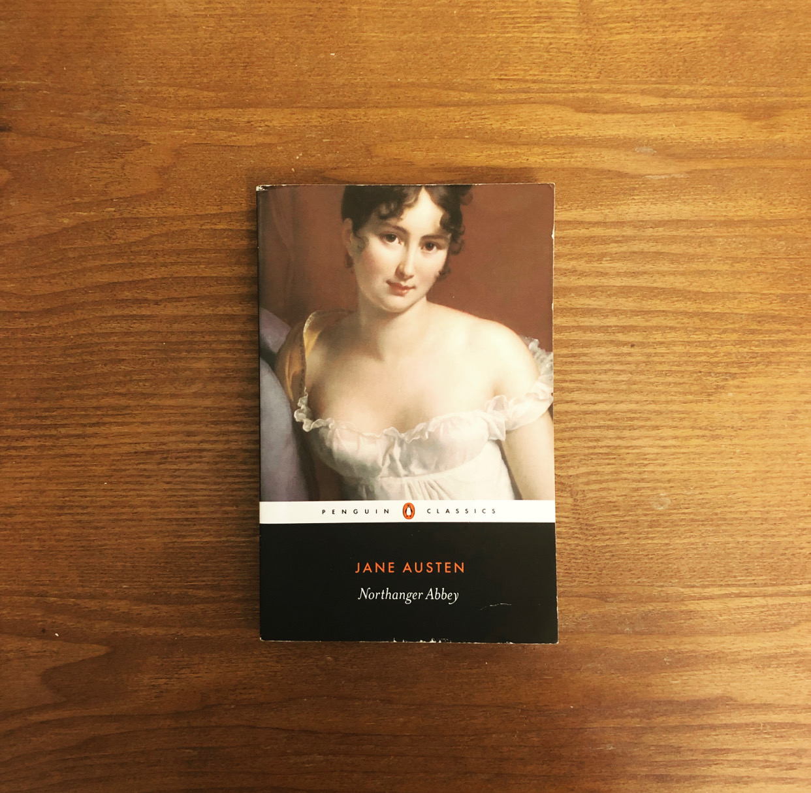

>
<
close
When Elizabeth Bennet meets eligible bachelor Fitzwilliam Darcy, she thinks him arrogant and conceited; he is indifferent to her good looks and lively mind. When she later discovers that Darcy has involved himself in the troubled relationship between his friend Bingley and her beloved sister Jane, she is determined to dislike him more than ever. In the sparkling comedy of manners that follows, Jane Austen shows the folly of judging by first impressions and superbly evokes the friendships, gossip and snobberies of provincial middle-class life.
close
At twenty-seven, Anne Elliot is no longer young and has few romantic prospects. Eight years earlier, she had been persuaded by her friend Lady Russell to break off her engagement to Frederick Wentworth, a handsome naval captain with neither fortune nor rank. What happens when they encounter each other again is movingly told in Jane Austen's last completed novel.
close
Taken from the poverty, Fanny Price is brought up with her rich cousins at Mansfield Park, acutely aware of her humble rank and with her cousin Edmund as her sole ally. During her uncle's absence in Antigua, the Crawford's arrive in the neighbourhood bringing with them the glamour of London life and a reckless taste for flirtation. Mansfield Park is considered Jane Austen's first mature work and, with its quiet heroine and subtle examination of social position and moral integrity, one of her most profound.
close
Marianne Dashwood wears her heart on her sleeve, and when she falls in love with the dashing John Willoughby she ignores her sister Elinor's warning that her impulsive behaviour leaves her open to gossip. Meanwhile Elinor is struggling to conceal her own romantic disappointment. The sisters learn that sense must mix with sensibility if they are to find personal happiness.
close
Beautiful and clever Emma Woodhouse is perfectly content with her life and sees no need for love or marriage. Nothing, however, delights her more than interfering in the romantic lives of others. But when she ignores the warnings of her good friend Mr. Knightley and attempts to arrange a suitable match for her protegee Harriet Smith, her carefully laid plans soon unravel and have consequences that she never expected.Emma is often seen as Jane Austen's most flawless work.
close
During an eventful season at Bath, young, naive Catherine Morland experiences the joys of fashionable society for the first time. She is delighted with her new acquaintances: flirtatious Isabella, who shares Catherine's love of Gothic romance and horror, and sophisticated Henry and Eleanor Tilney, who invite her to their father's mysterious house, Northanger Abbey. There, her imagination influenced by novels of sensation and intrigue, Catherine imagines terrible crimes committed by General Tilney. With its broad comedy and irrepressible heroine, this is the most youthful and and optimistic of Jane Austen's works.
Pride and Prejudice
Persuasion
Mansfield Park
Sense and Sensibility
Emma
Northanger Abbey